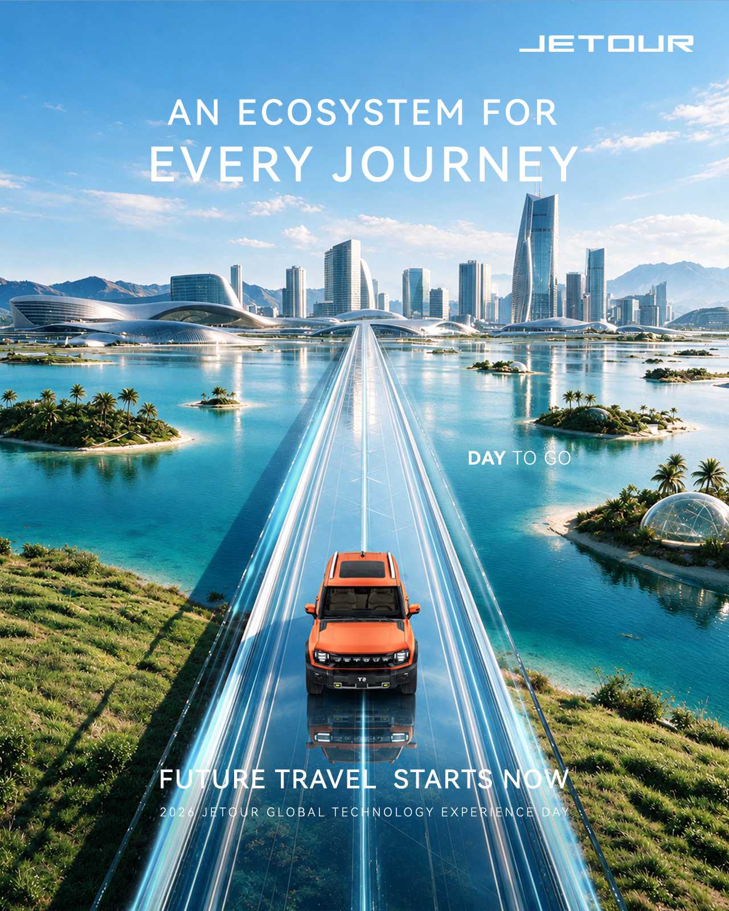
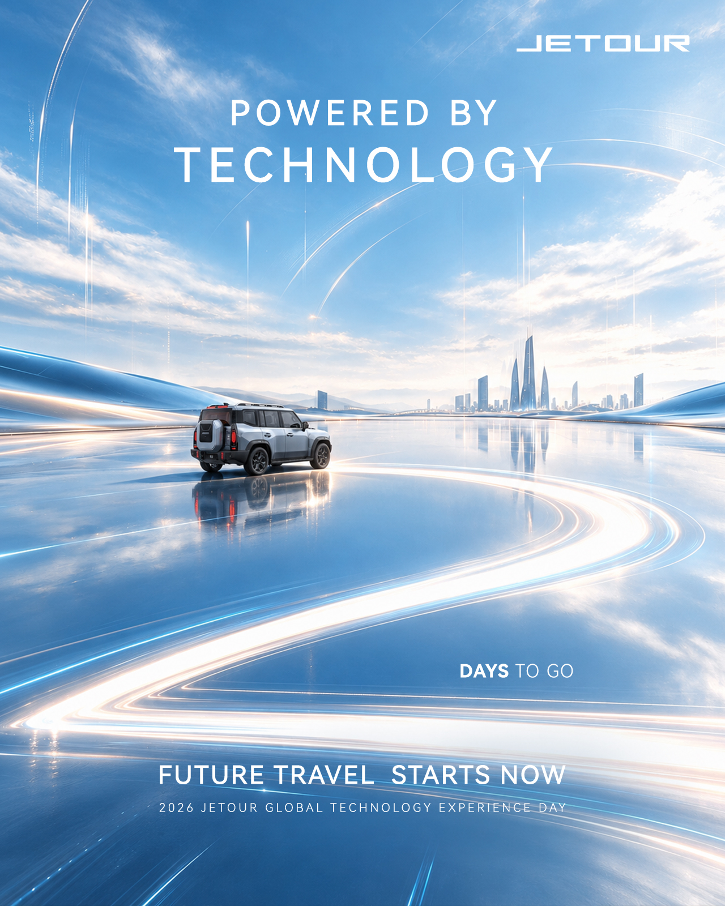
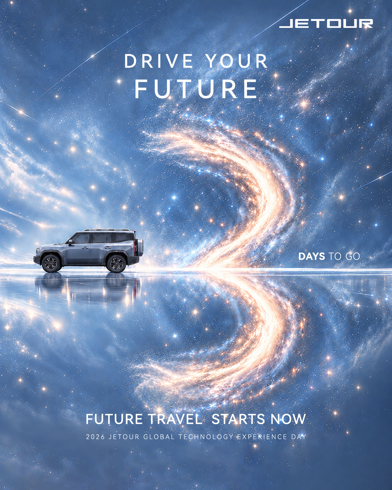

AUTOMOTIVE / VISUAL DESIGN / MOTION
Future travel
starts now.
Countdown visuals for JETOUR’s 2026 Global Technology Experience Day, alongside a travel-themed promotional film.
COUNTDOWN CAMPAIGN
Three views
of the future.
Static visuals bring together technology, travel and a sense of possibility.



MOTION
In motion.
Three animated countdown visuals and a travel-themed event promotional film.